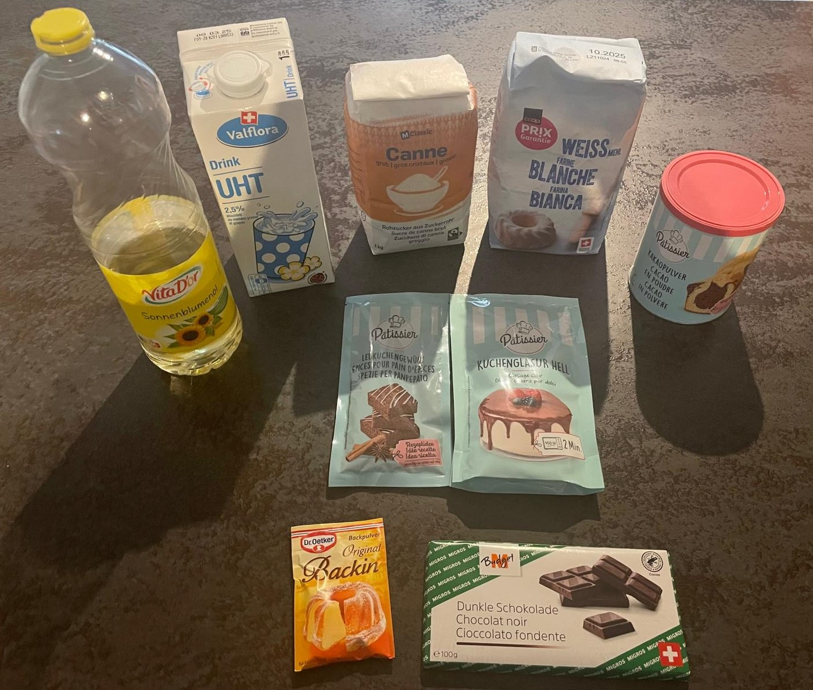
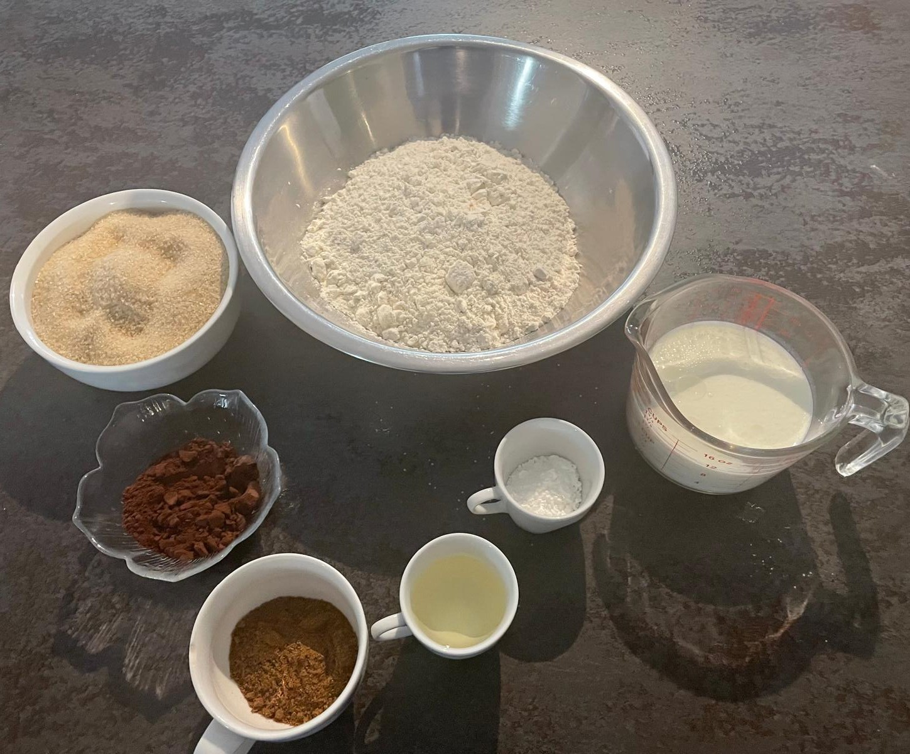
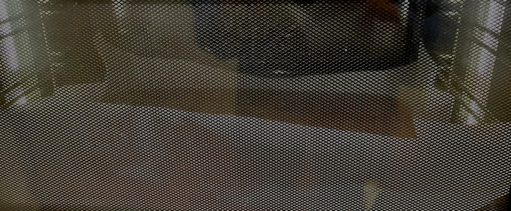
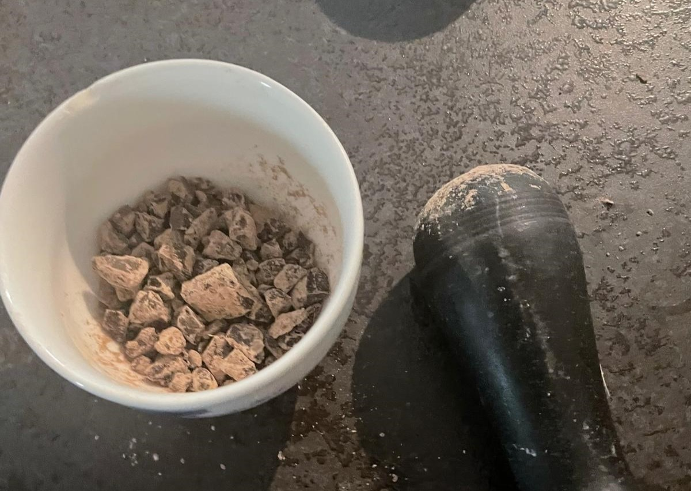

<!DOCTYPE html>
<html lang="de">

<head>
  <meta charset="UTF-8">
  <meta http-equiv="X-UA-Compatible" content="IE=edge">
  <meta name="viewport" content="width = device-width, initial-scale = 1">
  <meta name="viewport" content="width=device-width, initial-scale=1, maximum-scale=1, user-scalable=no">
  <title>Backrezept</title>
  <link href='https://fonts.googleapis.com/css?family=Delius' rel='stylesheet'>
  <link rel="stylesheet" href="https://cdn.jsdelivr.net/npm/bootstrap@4.0.0/dist/css/bootstrap.min.css"
    integrity="sha384-Gn5384xqQ1aoWXA+058RXPxPg6fy4IWvTNh0E263XmFcJlSAwiGgFAW/dAiS6JXm" crossorigin="anonymous">
  <link rel="stylesheet" href="css/styles.css">
</head>

<body>
  <nav class="navbar">
    <div class="nav" id="name"><a href="#bottom">Noser Young</a></div>
    <div class="nav" id="title">
        <h1>Lebkuchen Rezept</h1>
      </div>
    <div class="navlinks">
      <a href="#Zutate" class="links">Zutaten</a>
      <a href="#step" class="links">Schritte</a>
      <a href="#extra" class="links">Zusatzschritte</a>
    </div>
  </nav>
  <div id="Zutate"><br><br><br><br></div>
  <div id="Zutaten" class="boxes">
    <h2>Zutaten</h2>
    
    <p>
      <b>Mehl:</b> &emsp; 600g <br>
      <b>Rohzucker:</b> &emsp; 530g <br>
      <b>Lebkuchengewürz:</b> &emsp; 1 Packung <br>
      <b>Kakaopulver:</b> &emsp; 2 EL <br>
      <b>Sonnenblumenöl:</b> &emsp; 0.5 dl <br>
      <b>Backpulver:</b> &emsp; 2 EL <br>
      <b>Milch:</b> &emsp; 6 dl <br>
      Alles ausgewogen:
    </p>
    
    <div>
    </div>
  </div>
  <div id="step"><br><br><br><br></div>
  <div id="Schritte" class="boxes">
    <h2>Schritte</h2>
    <p>
      <br>
      <b>Schritt 1</b><br>
      alle Zutaten in eine Schüssel und mischen
      <br>
      <b>Schritt 2</b><br>
      Nach dem Mischen auf einem gefettetem Bachblech 30 Minuten in den um 200° C vorgeheiztem Ofen auf Ober- und
      Unterhitze
      <br>
      <b>Schritt 3</b><br>
      Aus dem Ofen nehmen und in Stücke schneiden. <br> <br><br>
      <b>FERTIG! &#1;</b>
    </p>
  </div>
  <div id="extra"><br><br><br><br></div>
  <div id="Zusatzschritte" class="boxes">
    <h2>Zusatzschritte</h2>
    <p>
      <br>
      <b>Extra Schokoladenstücke</b> <br>
      Man kann noch Schokaldenstücke noch in die Mischung hinzugeben
      <br>
      <b>Schokoladenglasur</b><br>
      Am Schluss vor dem in Stücke schneiden kann man noch Schokoladenglasur auf dem Lebkuchen geben.
    </p>
  </div>
  <div id="bottom">Website made for Noser Young | @BLJ WEB &#169;</div>


  <script src="https://code.jquery.com/jquery-3.2.1.slim.min.js"
    integrity="sha384-KJ3o2DKtIkvYIK3UENzmM7KCkRr/rE9/Qpg6aAZGJwFDMVNA/GpGFF93hXpG5KkN"
    crossorigin="anonymous"></script>
  <script src="https://cdn.jsdelivr.net/npm/popper.js@1.12.9/dist/umd/popper.min.js"
    integrity="sha384-ApNbgh9B+Y1QKtv3Rn7W3mgPxhU9K/ScQsAP7hUibX39j7fakFPskvXusvfa0b4Q"
    crossorigin="anonymous"></script>
  <script src="https://cdn.jsdelivr.net/npm/bootstrap@4.0.0/dist/js/bootstrap.min.js"
    integrity="sha384-JZR6Spejh4U02d8jOt6vLEHfe/JQGiRRSQQxSfFWpi1MquVdAyjUar5+76PVCmYl"
    crossorigin="anonymous"></script>

</body>

</html>